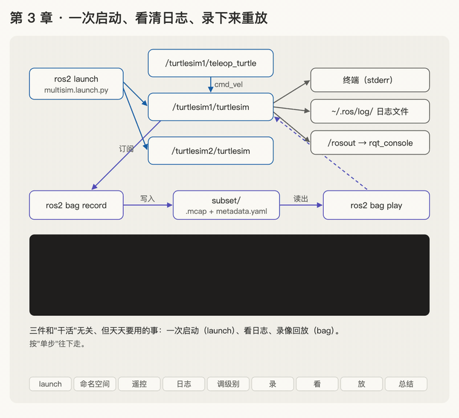
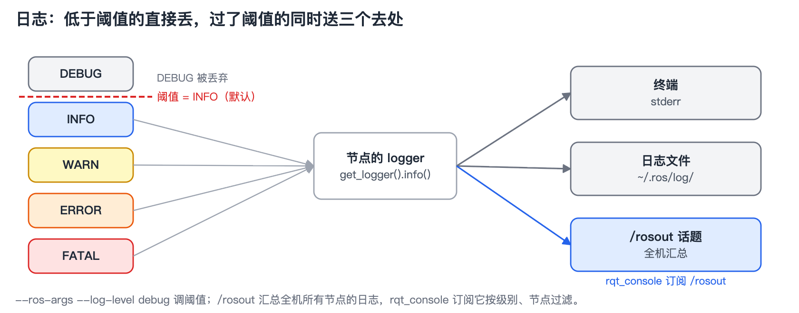
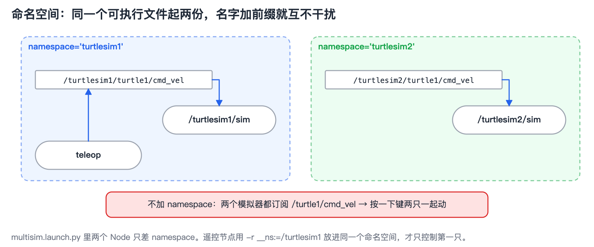
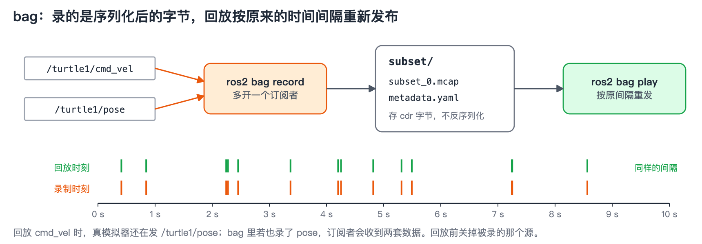

第 3 章 · 日志、launch 和 bag：一次启动、看清日志、录下来重放
本地运行
git clone https://github.com/wikieden/ros2-from-scratch
cd ros2-from-scratch/code/notebooks
pip install jupyterlab torch numpy
jupyter lab ch03_log_launch_bag.ipynb也可以下载后直接用 VS Code 打开 .ipynb 运行。需要 GPU 的章节在 Colab 里选「代码执行程序 → 更改运行时类型 → GPU」。
本章回答：节点一多，每个开一个终端太累，怎么一条命令全启动？几十个节点同时打印，怎么看日志？机器人出了怪事，怎么把当时的数据录下来，回到桌前重放复现？
讲解日期：2026-11-13 · 上一章：第 2 章 用命令行看懂 turtlesim · 下一章：第 4 章 工作区与第一个包
对应原文：ros2_documentation/source/ROS-Framework/nodes/About-Logging/About-Logging.rst；ros2_documentation/source/ROS-Framework/nodes/Working-with-nodes/Launching-Multiple-Nodes/Launching-Multiple-Nodes.rst；ros2_documentation/source/ROS-Framework/interfaces/Working-with-interfaces/Recording-And-Playing-Back-Data/Recording-And-Playing-Back-Data.rst（路径相对ros2/materials/）
对应 study-plan 阶段 A4，动手里程碑 R-M1。
本章缩写：stderr = standard error（标准 / 错误输出：终端里日志走的通道）；DEBUG / INFO / WARN / ERROR / FATAL（调试 / 信息 / 警告 / 错误 / 致命：五个日志级别）；ns = namespace（命名空间）；MCAP（不是缩写，一种机器人数据录制文件格式，现为 rosbag2 默认）；CDR = Common Data Representation（通用 / 数据 / 表示：DDS 的序列化格式）；SQLite（一种单文件数据库，rosbag2 的旧默认存储）。全部缩写见 附录 · 缩写与术语表
本章先看总图，再分 3 步：
| 步 | 内容 | 状态 |
|---|---|---|
| 0 | 总图：launch 启动 → 日志三去处 → bag 录放 | ✅ |
| 1 | 日志：五个级别、三个去处、--log-level、rqt_console |
✅ |
| 2 | launch：ros2 launch、读懂一个 launch 文件、命名空间 |
✅ |
| 3 | bag：record / info / play，录话题、服务和动作 |
✅ |
讲解
总图 · 一个系统的"开机、看病、录像"

可交互版：animations/03-launch-log-bag.html（内置浏览器里看：启动 ros2-animations 预览，打开 http://localhost:8340/03-launch-log-bag.html）。
类比：开一家店有三件事和做菜无关但天天要做：开门（launch：一句话把所有员工叫到岗）、看监控和记录（日志：谁在什么时候说了什么）、录像回放（bag：出事后调录像，看当时到底发生了什么）。
第 1 步 · 日志：五个级别、三个去处
依据：ROS-Framework/nodes/About-Logging/About-Logging.rst（下称"日志文档"）。
五个级别，从低到高：DEBUG（调试细节）→ INFO（正常信息）→ WARN（警告，能继续跑）→ ERROR（出错）→ FATAL（致命，通常要退出）。每个节点有一个日志器（logger），只处理不低于设定级别的消息。默认级别是 INFO，所以 DEBUG 平时看不到。
三个去处（日志文档 Overview）：默认同时送到
- 终端（走 stderr）；
- 磁盘上的日志文件，通常在
~/.ros/log/（可用环境变量ROS_LOG_DIR改）； /rosout话题：所有节点的日志汇成一个话题，任何节点都能订阅。第 2 章node info里每个节点都发布/rosout，原因就在这。
为什么要有第 3 个去处？ 机器人上跑着几十个节点，可能分布在几台电脑上。你在笔记本上订阅 /rosout，就能看到全机所有节点的日志，不用一台台登录看终端。rqt_console 就是干这个的图形工具：
ros2 run rqt_console rqt_console
它按级别、节点名过滤 /rosout 上的日志。
调级别：启动时加 --log-level：
ros2 run turtlesim turtlesim_node --ros-args --log-level debug # 整个节点
ros2 run demo_nodes_cpp talker --ros-args --log-level talker:=DEBUG # 只调一个日志器（日志文档第 182 行）
代码里怎么写：Python 里 self.get_logger().info('...')，还能加 throttle_duration_sec=1.0（每秒最多打一次）、once=True（只打一次）。C++ 用 RCLCPP_INFO(node->get_logger(), "...") 一族宏，带 _THROTTLE、_ONCE 等变体（日志文档 APIs 一节）。在 50 Hz 的控制回调里打日志，一定要节流，否则终端被刷屏、还拖慢回调。
Lyrical 新功能：日志后端可以在运行时用环境变量 RCL_LOGGING_IMPLEMENTATION 换（默认 rcl_logging_spdlog，rcl_logging_noop 关掉写文件）；launch 文件里也能按条设置日志级别（Releases/Release-Lyrical-Luth.rst 对应两节）。

图 3-1 · 日志：低于阈值的丢掉，其余同时送到终端、日志文件和 /rosout 话题。
第 2 步 · launch：一条命令启动整个系统
依据：ROS-Framework/nodes/Working-with-nodes/Launching-Multiple-Nodes/Launching-Multiple-Nodes.rst（下称"launch 教程"）。
用法：ros2 launch <包名> <launch 文件名>。turtlesim 自带一个：
ros2 launch turtlesim multisim.launch.py
会弹出两个模拟器窗口。这个文件只有十几行（launch 教程附带的 launch/multisim.launch.py）：
from launch import LaunchDescription
import launch_ros.actions
def generate_launch_description(): # 固定的入口函数名
return LaunchDescription([ # 一张"要启动什么"的清单
launch_ros.actions.Node(
namespace='turtlesim1', package='turtlesim',
executable='turtlesim_node', output='screen'),
launch_ros.actions.Node(
namespace='turtlesim2', package='turtlesim',
executable='turtlesim_node', output='screen'),
])
逐项看：
| 写法 | 意思 |
|---|---|
generate_launch_description() |
ros2 launch 会找这个函数并调用它 |
LaunchDescription([...]) |
一张清单，列出要启动的东西 |
Node(package=, executable=) |
等于一条 ros2 run 包 可执行文件 |
namespace='turtlesim1' |
命名空间：给这个节点的所有名字加前缀 |
output='screen' |
节点的输出打到当前终端 |
命名空间是关键。 两个模拟器如果不加前缀，都会订阅 /turtle1/cmd_vel，按一下键两只乌龟一起动（第 2 章练习 2-1 的情形）。加了命名空间后，话题变成 /turtlesim1/turtle1/cmd_vel 和 /turtlesim2/turtle1/cmd_vel，彼此分开。多台同型号机器人共用一个网络时，靠的就是命名空间（比如 /robot1/...、/robot2/...）。
要遥控其中一只，把遥控节点也放进同一个命名空间：
ros2 run turtlesim turtle_teleop_key --ros-args -r __ns:=/turtlesim1
-r 是 --remap 的缩写，__ns 指命名空间（第 2 章改节点名用的是 __node）。
其他要点：
- launch 文件可以用 Python、XML 或 YAML 写（launch 教程的 FAQ）。Python 最灵活，XML / YAML 更短。
- 可以传参数：
ros2 launch <包> <文件> 参数名:=值，前提是文件里声明过这个参数（launch 教程 FAQ）。 - launch 还能加载参数文件、做条件判断、监听"某节点退出就关掉全部"之类的事件，这些放到第 14 章。

图 3-2 · 命名空间：同一个可执行文件起两份，所有名字加前缀，话题就分开了。
第 3 步 · bag：把数据录下来，回放复现
依据：ROS-Framework/interfaces/Working-with-interfaces/Recording-And-Playing-Back-Data/Recording-And-Playing-Back-Data.rst（下称"bag 教程"）。
bag 是 ROS 的"录像带"：把话题上的消息按时间录进文件，之后按原来的节奏重新发布出去。工具叫 rosbag2，命令是 ros2 bag。
录（bag 教程第 3 步）：
ros2 bag record --topics /turtle1/cmd_vel # 录一个话题，目录名自动按时间起
ros2 bag record -o subset --topics /turtle1/cmd_vel /turtle1/pose # 录两个，目录叫 subset
ros2 bag record -o subset_split -d 5 --topics ... # 每 5 秒切一个文件（-b 按大小切）
按 Ctrl+C 停止。得到一个目录，里面是数据文件加一个 metadata.yaml（说明书）。
看（bag 教程第 4 步）：
$ ros2 bag info subset
Files: subset_0.mcap
Bag size: 228.5 KiB
Storage id: mcap
Duration: 48.47s
Messages: 3013
Topic information: Topic: /turtle1/cmd_vel | Type: geometry_msgs/msg/Twist | Count: 9 | Serialization Format: cdr
Topic: /turtle1/pose | ...
两个细节：
- 存储格式默认是 MCAP（
Storage id: mcap），一种通用的机器人数据格式，Foxglove 等可视化工具能直接打开。老版本默认是 SQLite（.db3）。 - 消息是以序列化后的字节（
cdr格式）存的，也就是第 1 章总图 2 第 ⑥ 步的样子。录制时不用反序列化，所以很省 CPU。
放（bag 教程第 5 步）：
ros2 bag play subset # 按原节奏重新发布；空格暂停，方向键调速
ros2 bag play -i subset_cmd_vel -i subset_pose # 同时放两个 bag，时间对齐
回放 /turtle1/cmd_vel 时，乌龟会重走当时的路线。注意：如果 bag 里也录了 /turtle1/pose，回放时会有两个来源往 pose 上发（真模拟器 + bag），订阅者会看到两套数据打架。所以回放时，被录的那个话题的原始发布者通常要关掉。
还能录服务和动作（bag 教程后两部分）：--service <名> / --all-services，回放时用 --publish-service-requests 把请求重新发给服务端。前提是节点开了服务内省（第 2 章第 3 步提过）。
为什么 bag 对你很重要：
- 复现：机器人在现场"偶尔"出错，录下来就能在桌前一遍遍重放、调试，不用再上机器。
- 数据集：VLA / 模仿学习的示范数据，最原始的形态往往就是遥操作时录的 bag（相机 + 关节状态 + 动作指令），再转成 LeRobot 等训练格式。
- 离线测试：新写的感知节点不用连真相机，订阅 bag 回放的
/image就能测。
Lyrical 新功能（Release-Lyrical-Luth.rst）：用服务远程开始 / 停止录制、Python API 控制录放、--max-bag-files 循环录制（盘满前删最旧的分片）、丢包统计话题 events/rosbag2_messages_lost。机器人上长期"黑匣子"式录制正需要这些。

图 3-3 · bag：录的是序列化后的字节，回放按原来的时间间隔重新发布；被录的源回放前要关掉。
练习与作答记录
练习 3-1（第 1 步）：你的控制节点每秒执行 100 次回调，你想在里面打一条"当前速度"的日志，但不想刷屏。Python 里怎么写？
- 作答：（待作答）
练习 3-2（第 2 步）：把 multisim.launch.py 里两个 namespace= 都删掉，再启动。会发生什么？ros2 node list 会看到什么问题？
- 作答：（待作答）
练习 3-3（第 3 步）：你录了一个包含 /turtle1/cmd_vel 和 /turtle1/pose 的 bag。现在想在开着 turtlesim 的情况下回放，只让乌龟重走路线，不想让 pose 打架。命令怎么写？（提示：ros2 bag play --help 里找"只放部分话题"的选项。）
- 作答：（待作答）
口诀
- 日志：五级（调试、信息、警告、错误、致命），三去处（终端、文件、
/rosout）；高频回调要节流。 - launch：一张清单起全家；命名空间分你我。
- bag：record 录、info 看、play 放；录的是字节，存的是 MCAP；回放时关掉原来的发布者。
本章复习卡片编号
R10–R12，见 ../review.md。
附录 · 延伸阅读
留给以后深入学习用，不影响本章主线。★ 是建议先读的。
materials/指ros2/materials/；不带前缀的路径在materials/ros2_documentation/source/下（design/、ecosystem/开头的在materials/下）；...表示省略了和上一条相同的目录。
推荐阅读
| 读什么 | 读哪里 | 读它为了什么 |
|---|---|---|
★ About-Logging.rst |
materials/ros2_documentation/source/ROS-Framework/nodes/About-Logging/About-Logging.rst |
级别、日志器层级、三个去处、环境变量（ROS_LOG_DIR、RCUTILS_CONSOLE_OUTPUT_FORMAT）。 |
Using-Rqt-Console.rst |
ROS-Framework/nodes/Working-with-nodes/Using-Rqt-Console/Using-Rqt-Console.rst |
rqt_console 的用法。 |
★ Launching-Multiple-Nodes |
ROS-Framework/nodes/Working-with-nodes/Launching-Multiple-Nodes/ |
第一次运行 launch 文件。 |
Creating-Launch-Files.rst |
Developer-Tools/Launch/Creating-Launch-Files.rst、Launch-file-different-formats.rst |
自己写 launch 文件，Python / XML / YAML 三种写法对照（第 14 章展开）。 |
★ Recording-And-Playing-Back-Data |
ROS-Framework/interfaces/Working-with-interfaces/Recording-And-Playing-Back-Data/ |
bag 录放话题、服务、动作。 |
Recording-A-Bag-From-Your-Own-Node-Py.rst |
ROS-Framework/client-libraries/Working-with-Client-Libraries/Recording-A-Bag-From-Your-Own-Node-Py.rst、Reading-From-A-Bag-File-Python.rst |
在自己的代码里录 / 读 bag（做数据转换时用）。 |
141_static_remapping.md |
design/articles/141_static_remapping.md、160_ros_command_line_arguments.md |
命名空间与 remap 规则。 |
数学原理
- 本章没有用到数学。
公式清单
| 公式 / 规则 |
|---|
| 相对名 → /命名空间/名字；/ 开头的绝对名不变；~ → /命名空间/节点名/… |
代码对照：把本章的数字用代码算一遍
纯 Python 模拟，不需要 ROS 2（原因见第 1 章这一节）。代码在仓库本地
ros2/solutions/chapter-code/ch03_log_launch_bag.py，配套测试tests/test_ch01_05.py；同名 notebook 在notebooks/ch03_log_launch_bag.ipynb（讲解和代码放在一起，一格一格跑）。Mac 上直接能跑：
bash cd ros2/solutions/chapter-code uv run python ch03_log_launch_bag.py # 一步一步打印 uv run pytest tests/test_ch01_05.py
讲义 ↔ 代码：
| 讲义 | 规则 / 数字 | 写法 | 跑出来 |
|---|---|---|---|
| 第 1 步 日志级别 | 只处理不低于设定级别的 | passes(level, 'INFO') |
DEBUG 丢掉，其余打印 |
| 第 2 步 命名空间 | 相对名加前缀 | resolve_name('turtle1/cmd_vel', 'turtlesim1') |
/turtlesim1/turtle1/cmd_vel |
| 第 2 步 绝对名 | / 开头不受影响 |
resolve_name('/rosout', ...) |
/rosout |
| 第 3 步 录 | 存序列化后的字节 | record(raw) |
(10.0, '/turtle1/cmd_vel', b'...') |
| 第 3 步 放 | 按原节奏；可调速 | play(bag) / play(bag, rate=2.0) |
0, 0.5, 2.0 秒 / 0, 0.25, 1.0 秒 |
关键几行：
LEVELS = ["DEBUG", "INFO", "WARN", "ERROR", "FATAL"]
LEVELS.index(level) >= LEVELS.index(threshold) # 不低于门槛才处理
if name.startswith("/"): return name # 绝对名原样
return f"{ns}/{name}" # 相对名接在命名空间后
(round((t - t0) / rate, 3), topic, json.loads(data)) # 回放：保持相对时间，rate 倍速
代码里才看得到的 3 件事：
- 私有名
~：讲义第 2 步没展开。~/xxx接在"命名空间 / 节点名"后面，第 2 章看到的/turtlesim/set_parameters就是~/set_parameters展开的结果。 - 回放只保相对时间：bag 里存的是录制时的绝对时间戳，回放从"现在"开始按间隔重新发；要让节点用 bag 里的时间，得配合第 11 章的仿真时间。
- 三条指令和时间是编的，只为看清录放保持间隔。
自己改一改（不影响练习答案）：
- 把门槛改成
WARN，看哪些级别被丢掉； - 在
raw里再加一条/turtle1/pose的消息，看录放后时间顺序是否还对。